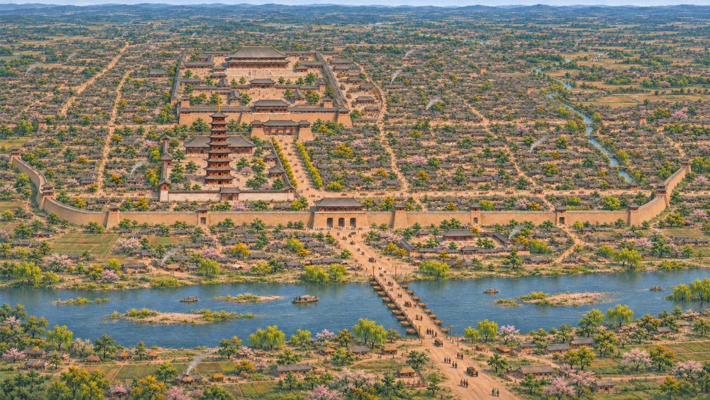

城市证据与全景 · R8.1
盛时洛阳，全景校订 V13
把近期核验中能够成立的空间关系落实到画面，再把尚无定论的地方交代清楚。
候选图 · 待审看 当前首页仍采用已批准的 V12。本页先提供完整新图及对照依据。
全幅对照
两幅图均按原始比例展示，切换时可对照同一地段。

V13 · 候选全景依据近期核验校订，待你审看后决定是否用于首页。
 V12 · 当前首页保留已批准的全幅取景版，供逐项对照。
V12 · 当前首页保留已批准的全幅取景版，供逐项对照。 无脚本时，两幅完整图依次展示。
从依据到画面
本次具体校订
下面记录成图中实际采用的处理；每项保留依据与不能推出的结论。
永宁寺塔：把九层真正画清楚
V12只能辨出约五道主要塔檐；选定V13可从底至顶数出九组主要木构楼层与塔檐，顶部金刹另计。
- 依据
- 《洛阳伽蓝记》记木构九层浮图；奈良文化财研究所1995年联合调查报告和洛阳博物馆资料可交叉核读。
- 图面处理
- 保留原寺址在画面中的大致位置，改为九层木塔，采用层层收分的灰瓦、木构与朱褐色支承表达。
- 仍须保留
- 九层与木构有据；本图的总高度、各层高度、收分、屋顶曲线及色彩分配仍是艺术处理，不能量出实测米数。
联合调查原报告（印本2—3页） · 洛阳博物馆永宁寺资料
返回全景对照
寺南门：保持位置，三重形制仍待校正
选定图仍采用较低的寺南门。尝试改成三重门楼的三张草案均把门楼向前推离寺墙，已剔除。
- 依据
- 《洛阳伽蓝记》记南门楼三重；周本“通三阁道”与范本“通三道”并存，不能直接据此认定三个已考古确认的地面门孔。
- 图面处理
- 保留第二张候选中原寺南门与院墙的联系。本轮不把有位置问题的三重门楼纳入候选。
- 仍须保留
- 三重形制已有文字依据，但尚未在选定图中可靠落实；此项是明确登记的绘制欠缺，不是历史上门楼只有一层的判断。
寺门原文与异文记录 · 建筑构成说明
返回全景对照
寺墙：加入有局部遗存依据的材料差异
候选图把永宁寺院墙与周围城墙分开处理，寺墙以浅色抹面和灰瓦压顶表达。
- 依据
- 1995年联合调查报告的永宁寺西墙为夯土，表面涂白土，局部留赤彩痕；同时出土瓦及鸱尾。
- 图面处理
- 把浅白土色抹面、朱褐色木构与灰瓦集中用于寺院区域，避免全城统一成一种墙面。
- 仍须保留
- 西墙遗存直接支持其局部材料。向寺院其他墙面的延伸、完整彩画与鲜艳程度仍属表现推定；没有恢复全寺原始色谱。
联合调查原报告（印本2页）
返回全景对照
寺、御道与宫城：保留核验成立的方向关系
永宁寺仍在宫前阊阖门以南、画面主路西侧；佛殿位于塔后，寺院与宫城分别围合。
- 依据
- R7 PY03及相关原文明示永宁寺在宫前门南、御道西；塔北佛殿另有文字与寺院调查支持。
- 图面处理
- 沿用南望北的全幅视角，保持寺院不占据御道中线、不移入宫城；宫前大道继续表达为陆路。
- 仍须保留
- 方向关系的保持不代表画中距离、寺墙角点、院落大小或所有道路连接已完成共同测量。
宫前与永宁寺核验图
返回全景对照
宫城：区分主要殿堂与附属空间
主殿、廊庑、小院及较低的附属建筑仍有体量差异；宫东房群保持概化表现。
- 依据
- R7司马门节点分别登记宫院东墙、宫城内部道路与仓区，并区分主路、夹道及仓区内路。
- 图面处理
- 保留宫内交通空间和较低附属体量，不按仓窖统计数生成相同数量的屋顶。
- 仍须保留
- 本图没有可靠复原司马门道路的40米断面、完整仓墙或具体仓窖分布；宫东所画房群不能当成已经核定的仓储建筑平面。
司马门与仓区核验
返回全景对照
坊街：保留主次层级，减少同形建筑印象
宽阔主路、较小巷道、不同尺度院落和疏密相间的建筑群共同构成城市背景。
- 依据
- 白马寺节点要求把街宽、门洞缺口、车辙带和不同交会点分别理解；现有资料不足以给所有街坊统一套用一套网格。
- 图面处理
- 让普通街坊与宫寺体量有区分，保持可读的道路层级，不把某个画面街坊命名为已定位的白马寺坊。
- 仍须保留
- 屋顶变化与背景街巷是表现层修订，不是新取得的住宅测绘图；没有新增街道交点、坊界或同期性结论。
白马寺坊街证据
返回全景对照
洛水与浮桥：保持结构，约束未定接续
前景保留两岸和完整舟承木面浮桥；宫前没有被添成中轴运河。
- 依据
- 《洛阳伽蓝记》明确永桥为浮桥。R7城东三桥、不同水道解释及年代均分别登记。
- 图面处理
- 延续V12浮桥结构和全幅取景，不把城东三桥拼成等距桥列，也不借新图确定鸿池陂出入口。
- 仍须保留
- 桥长、舟数、河宽、古岸形状及画面右侧水道的接入仍为示意；1993与2011原图未取得，不能由画面反推地理控制点。
城东桥渠核验 · 逐段道路与水系依据
返回全景对照
怎样理解这张复原图
研究窗口仍为516—528年。这是一张受证据约束的艺术全景；画面细节本身不成为新的考古证据，也不新增古代坐标或古岸测线。
- 南门三重楼的文献形制尚未在选定图可靠落实，保留较低门形是已知绘制欠缺。
- 塔的总米高、楼层高度、屋顶和完整彩画未复原为可量测的建筑模型；西墙材料证据不等于全寺彩色立面。
- 宫院墙、宫城墙、仓区及道路在图中的细部位置仍含表现取值，地下仓窖统计不等于地面屋顶数量。
- 坊街远景没有新增考古定位；图中住宅与巷路不能代替共同基准的原始发掘总平面。
- 桥头、古岸、水口和城东渠路接合仍缺原图或共同测线。1993报告只核到目录及登录入口；2011简报只新增重印本馆藏线索。
- 全景是516—528年文献综合时层的艺术表达，不能当成某一年的全城摄影式快照。
回查逐段证据 · 查看城市分布图 · 查看水系定位依据